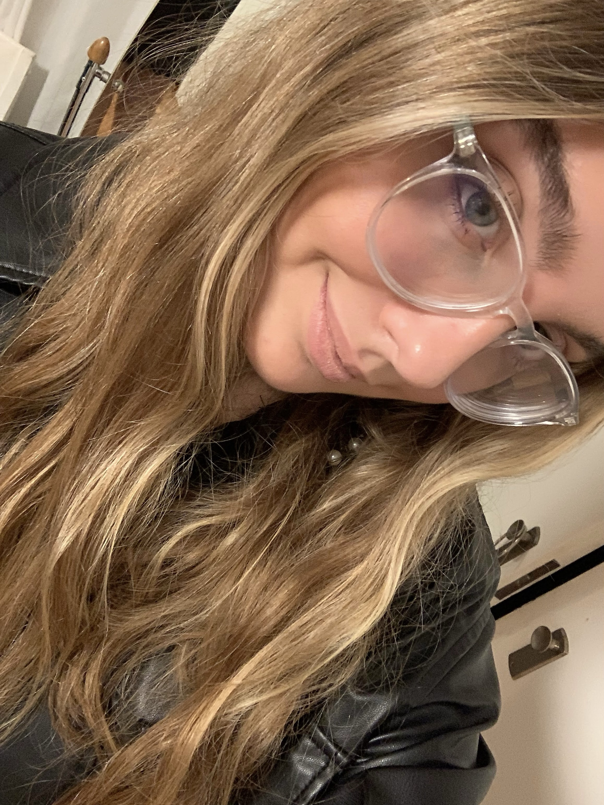

Instagram
Linkedin
- MI HISTORIA
- MIS CONOCIMIENTOS
GUADALUPE CASTELLÁ
Estudiante de la licenciatura de Diseño Integral
UTDT

MI HISTORIA
Hola, soy Guadalupe y tengo 20 años viviendo en la Ciudad Autónoma de Buenos Aires. Toda mi vida fue
particularmente en Belgrano y sus 8,02 km². Aunque mi abuela vive en Barracas y me estiro los domingos para
ver a mi familia. Siempre fui muy familiar, y hoy tengo a la mayoría residiendo en Madrid, incluso a mis papás.
Así que vivo sola con mi hermana, y en algún futuro cercano me encantaría viajar por distintas partes del mundo.
Además fui a un colegio francés, pero nunca fui a Francia, y fue a causa del covid. Mientras tanto en cuarentena,
investigué carreras, siempre por la rama del diseño. Mi primera opción fue Arquitectura, después vi que lo que me gustaba
era el diseño de interiores pero tampoco me quería cerrar, y descubrí diseño integral en la Universidad Torcuato Di tella.
Ahora padezco de que me pregunten: ¿diseño de qué?.
MIS CONOCIMIENTOS
En el secundario me iba bien en matemáticas pero no me quería dedicar a eso, ni a la física, ni química
quería algo más creativo. Me fijaba mucho en lo estético de distintos ámbitos, de lo arquitectónico, de la moda y de la fotografía.
Donde cada paisaje que me cruzaba, yo lo veía como una oportunidad de contar algo nuevo, una nueva sensación de mi intimidad.
En su momento también, me quedaba horas extras en el colegio para hacer música. Toqué el piano, la guitarra y bueno quién no
cayó en el ukelele por Tik tok. Aparte hice cursos de inglés y tengo tanto el bachillerato argentino como el francés porque fui al "Liceo Francés"
Uno de mis hobbies es la natación, estoy en un equipo de entrenamiento, sin embargo no elijo competir por la presión que requiere
y no anhelo dedicarme a ello.
En la carrera de diseño, aprendí a hacer gráficas con Illustrator y Photoshop y a editar videos en After Effects.
El segundo año Rhino y KeyShot me ayudaron a pensar objetos en 3d, lo que mejoró mi forma de pensar lo objetual en los interiores de las casas.
Este año, Figma y Visual Code son mis mejores amigos, espero dominarlos como el resto de las aplicaciones. Por interés
propio, la fotografía me acompaña a todos lados y por pura curiosidad terminé sabiendo usar Lightroom.
En un futuro, espero viajar, conocer y seguir descubriendo la profesión que elegí. Teniendo distintas experiencias y concluir, en algún momento
en lo que más cautivó mi esencia el diseño.